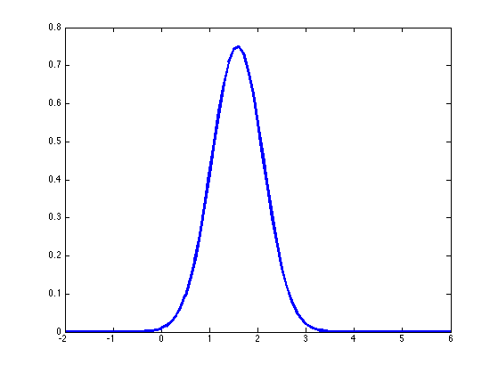
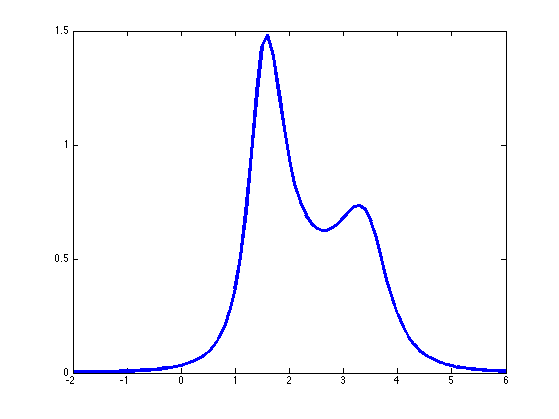

Sensor Fusion Demo
xs = [1.1 1.9]; nx = length(xs);
ys = [2.9 4.1]; ny = length(ys);
xbar = mean(xs);
ybar = mean(ys);
sx = sum((xs - xbar).^2)/nx;
sy = sum((ys - ybar).^2)/ny;
lamx = 1/sx;
lamy = 1/sy;
postPrec = (nx*lamx + ny*lamy);
theta = (xbar*nx*lamx + ybar*ny*lamy)/postPrec
postVar = 1/postPrec
for iter=1:10
lamx = nx/sum((xs-theta).^2);
lamy = ny/sum((ys-theta).^2);
theta = (xbar*nx*lamx + ybar*ny*lamy)/(nx*lamx + ny*lamy);
end
theta
postVar = 1/(nx*lamx + ny*lamy)
figure;
gridTheta = -2:0.1:6;
plot(gridTheta, gaussProb(gridTheta, theta, sqrt(postVar)), 'linewidth', 3);
printPmtkFigure sensorFusion2Gauss
fx = (gridTheta-xbar).^2 + sx;
fy = (gridTheta-ybar).^2 + sy;
post = (1./fx) .* (1./fy);
figure; plot(gridTheta, post, 'linewidth', 3);
printPmtkFigure sensorFusion2Nongauss
theta =
2.1154
postVar =
0.0554
theta =
1.5788
postVar =
0.0798
 